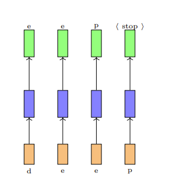
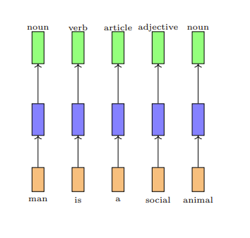
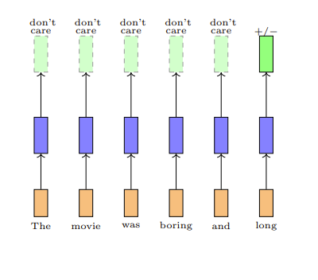
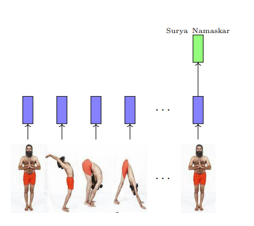
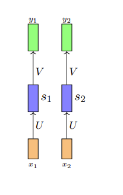
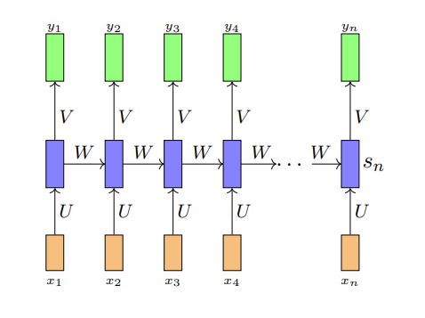
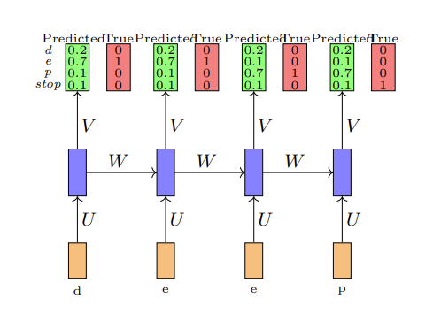
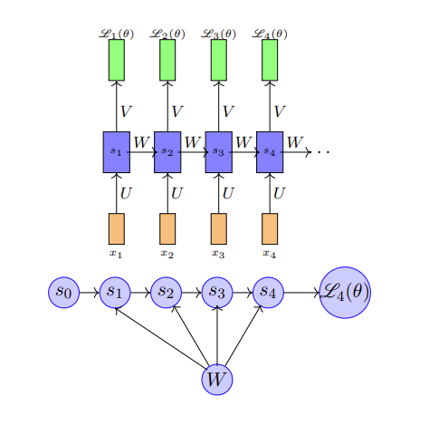

循环神经网络（RNN）¶
约 3662 个字 8 张图片 预计阅读时间 12 分钟
Reference¶
- https://www.cse.iitm.ac.in/~miteshk/CS7015/Slides/Handout/Lecture14.pdf
1 序列学习问题¶
在前馈神经网络和卷积神经网络中，输入的大小始终是固定的. 例如，在图像分类任务中，我们将固定大小（32×32）的图像输入到卷积神经网络中. 同样，在word2vec中，我们将固定窗口（k）大小的单词输入到网络中. 此外，网络的每个输入都与之前或未来的输入相互独立. 例如，两张连续图像的计算、输出和决策彼此完全独立.
在许多应用中，输入的大小并不固定，而且连续的输入之间可能也并非相互独立. 例如，考虑自动补全任务. 给定第一个字符“d”，你想要预测下一个字符“e”，依此类推.

请注意以下几点：首先，连续的输入不再相互独立（在预测“e”时，除了当前输入，你还需要知道前一个输入是什么）；其次，输入的长度和你需要进行的预测数量并不固定（例如，“learn”“deep”“machine”的字符数量不同）；第三，每个网络（橙蓝绿结构）都在执行相同的任务（输入：字符，输出：字符）.
这些被称为序列学习问题. 我们需要观察一系列（相关的）输入并生成一个或多个输出. 每个输入对应一个时间步. 让我们来看一些这类问题的更多示例.
考虑预测句子中每个单词的词性标签（名词、副词、形容词、动词）的任务.

一旦我们看到一个形容词（如“social”），我们几乎可以确定下一个单词应该是名词（如“man”）. 因此，当前的输出（名词）既取决于当前输入，也取决于前一个输入. 此外，输入的大小并不固定（句子中的单词数量可以是任意的）. 请注意，这里我们希望在每个时间步都生成一个输出. 每个网络都在执行相同的任务（输入：单词，输出：标签）.
有时我们可能并不关心在每个阶段都生成输出，而是在查看完整序列后再生成输出. 例如，考虑预测电影评论情感极性的任务.

预测显然不仅取决于最后一个单词，还取决于之前出现的一些单词. 同样，我们可以认为网络在每个步骤都执行相同的任务（输入：单词，输出：正向/负向），只是我们不关心中间输出.
序列可以由任何内容组成（不仅仅是单词）. 例如，视频可以被视为一系列图像. 我们可能希望查看整个视频序列并检测正在发生的运动.

2 循环神经网络¶
我们如何对涉及序列的任务进行建模呢？
期望功能如下：解释输入之间的依赖关系、处理可变数量的输入、确保在每个时间步执行的功能相同. 我们将针对上述每一点来构建一个处理序列的模型.
在每个时间步执行的函数是什么呢？

由于我们希望在每个时间步执行相同的函数，所以应该共享相同的网络（即在每个时间步使用相同的参数）.
这种参数共享还确保了网络对输入的长度（大小）不敏感. 因为我们只是在每个时间步计算相同的函数（使用相同的参数），所以时间步的数量并不重要. 我们只需创建多个网络副本，并在每个时间步执行它们.
我们如何解释输入之间的依赖关系呢？首先来看一种不可行的方法. 在每个时间步，我们将所有先前的输入都输入到网络中. 这样可以吗？不，这违反了我们期望功能中的其他两点. 让我们来看看为什么.
首先，现在每个时间步计算的函数不同. $$ \begin{align} y_{1}&=f_{1}\left(x_{1}\right)\ y_{2}&=f_{2}\left(x_{1}, x_{2}\right)\ y_{3}&=f_{3}\left(x_{1}, x_{2}, x_{3}\right) \end{align} $$
网络现在对序列的长度敏感. 例如，长度为10的序列将需要 \(f_{1}, ..., f_{10}\) ，而长度为100的序列将需要 \(f_{1}, ..., f_{100}\) .
解决方案是在网络中添加循环连接.

或者
\(s_{i}\) 是网络在时间步 \(i\) 的状态. 参数 \(W\) 、 \(U\) 、 \(V\) 、 \(c\) 、 \(b\) 在各个时间步共享. 相同的网络（和参数）可用于计算 \(y_{1}, y_{2}, ..., y_{10}\) 或 \(y_{100}\) .
这可以更简洁地表示.
让我们重新审视之前看到的序列学习问题. 现在我们在时间步之间有了循环连接，这解释了输入之间的依赖关系.
3 时间反向传播¶
在继续之前，让我们仔细看看参数的维度.
我们如何训练这个网络呢？（答案：使用反向传播）让我们通过一个具体的例子来理解.
假设我们考虑自动补全任务（预测下一个字符）. 为简单起见，我们假设词汇表中只有4个字符（d、e、p、
假设我们随机初始化 \(U\) 、 \(V\) 、 \(W\) ，网络预测的概率和真实概率如图所示.

我们需要回答两个问题：模型的总损失是多少？我们如何反向传播这个损失并更新网络的参数（ \(\theta=\{U, V, W, b, c\}\) ）？
总损失就是所有时间步损失的总和. $$ \begin{align} \mathscr{L}(\theta)&=\sum_{t=1}^{T} \mathscr{L}{t}(\theta)\ \mathscr{L}\right) \end{align}(\theta)&=-log \left(y_{t c} $$
\(y_{t c}\) = 在时间步 \(t\) 预测真实字符的概率， \(T\) = 时间步的数量.
对于反向传播，我们需要计算关于 \(W\) 、 \(U\) 、 \(V\) 、 \(b\) 、 \(c\) 的梯度. 让我们看看如何计算.
让我们考虑 \(\frac{\partial \mathscr{L}(\theta)}{\partial V}\) （ \(V\) 是一个矩阵，理想情况下我们应该写成 \(\nabla_{v} \mathscr{L}(\theta)\) ）.
求和中的每一项只是损失关于输出层权重的导数. 在学习反向传播时，我们已经知道如何计算这个.
让我们考虑导数 \(\frac{\partial \mathscr{L}(\theta)}{\partial W}\) .
根据导数的链式法则，我们知道 \(\frac{\partial \mathscr{L}_{t}(\theta)}{\partial W}\) 是通过从 \(\mathscr{L}_{t}(\theta)\) 到 \(W\) 的所有路径上的梯度求和得到的. 从 \(\mathscr{L}_{t}(\theta)\) 到 \(W\) 有哪些路径呢？让我们通过考虑 \(\mathscr{L}_{4}(\theta)\) 来看看.
\(\mathscr{L}_{4}(\theta)\) 依赖于 \(s_{4}\) ， \(s_{4}\) 又依赖于 \(s_{3}\) 和 \(W\) ， \(s_{3}\) 又依赖于 \(s_{2}\) 和 \(W\) ， \(s_{2}\) 又依赖于 \(s_{1}\) 和 \(W\) ， \(s_{1}\) 又依赖于 \(s_{0}\) 和 \(W\) ，其中 \(s_{0}\) 是一个固定的起始状态.

我们这里有一个有序网络. 在有序网络中，每个状态变量按指定顺序依次计算（首先是 \(s_{1}\) ，然后是 \(s_{2}\) ，依此类推）. 现在我们有： \(\(\frac{\partial \mathscr{L}_{4}(\theta)}{\partial W}=\frac{\partial \mathscr{L}_{4}(\theta)}{\partial s_{4}} \frac{\partial s_{4}}{\partial W}\)\)
在学习反向传播时，我们已经知道如何计算 \(\frac{\partial \mathscr{L}_{4}(\theta)}{\partial s_{4}}\) . 但是如何计算 \(\frac{\partial s_{4}}{\partial W}\) 呢？
回想一下：
在这样的有序网络中，我们不能简单地将 \(s_{3}\) 视为常数来计算 \(\frac{\partial s_{4}}{\partial W}\) （因为它也依赖于 \(W\) ）. 在这样的网络中，总导数 \(\frac{\partial s_{4}}{\partial W}\) 有两部分：显式部分： \(\frac{\partial^{+} s_{4}}{\partial W}\) ，将所有其他输入视为常数；隐式部分：从 \(s_{4}\) 到 \(W\) 的所有间接路径的总和. 让我们看看如何计算.
为简单起见，我们将简化一些路径.
最后我们有：
这个算法被称为时间反向传播（BPTT），因为我们在所有先前的时间步上进行反向传播.
4 梯度消失和梯度爆炸问题¶
现在我们将关注 \(\frac{\partial s_{t}}{\partial s_{k}}\) ，并强调使用BPTT训练循环神经网络（RNN）时的一个重要问题.
我们关注 \(\frac{\partial s_{j}}{\partial s_{j-1}}\) . \(\(a_{j}=W s_{j}+b\)\) \(\(s_{j}=\sigma\left(a_{j}\right)\)\) \(\(\begin{aligned} \frac{\partial s_{j}}{\partial s_{j-1}} & =\frac{\partial s_{j}}{\partial a_{j}} \frac{\partial a_{j}}{\partial s_{j-1}} \\ & =diag\left(\sigma'\left(a_{j}\right)\right) W \end{aligned}\)\)
我们关注 \(\frac{\partial s_{j}}{\partial s_{j-1}}\) 的大小，如果它很小（很大）， \(\frac{\partial s_{t}}{\partial s_{k}}\) 以及 \(\frac{\partial \mathscr{L}_{t}}{\partial W}\) 将会消失（爆炸）. \(\(\begin{aligned} \left\| \frac{\partial s_{j}}{\partial s_{j-1}}\right\| & =\left\| diag\left(\sigma'\left(a_{j}\right)\right) W\right\| \\ & \leq\| diag\left(\sigma'\left(a_{j}\right)\| \| W\| \end{aligned}\)\)
\(\sigma(a_{j})\) 是有界函数（如sigmoid、tanh）， \(\sigma'(a_{j})\) 也是有界的. \(\(\begin{aligned} \sigma'\left(a_{j}\right) & \leq \frac{1}{4}=\gamma[如果\sigma是逻辑斯蒂函数] \\ & \leq 1=\gamma[如果\sigma是双曲正切函数] \end{aligned}\)\) \(\(\begin{aligned} \left\| \frac{\partial s_{j}}{\partial s_{j-1}}\right\| & \leq \gamma\| W\| \\ & \leq \gamma \lambda \end{aligned}\)\) $$\begin{aligned} \left| \frac{\partial s_{t}}{\partial s_{k}}\right| & =\left| \prod_{j=k+1}^{t} \frac{\partial s_{j}}{\partial s_{j-
接上： \(\(\begin{aligned} \left\|\frac{\partial s_{t}}{\partial s_{k}}\right\| & = \left\|\prod_{j = k + 1}^{t}\frac{\partial s_{j}}{\partial s_{j - 1}}\right\|\\ & \leq \prod_{j = k + 1}^{t}\gamma\lambda\\ & \leq (\gamma\lambda)^{t - k} \end{aligned}\)\)
· 如果 \(\gamma\lambda < 1\) ，梯度将会消失. · 如果 \(\gamma\lambda > 1\) ，梯度可能会爆炸. 这就是所谓的梯度消失/梯度爆炸问题.
有一种简单的方法可以避免这个问题，即使用截断反向传播，我们将乘积限制为 \(\tau(< t - k)\) 项.
模块14.5：一些详细细节¶
我们知道如何使用反向传播计算 \(\frac{\partial \mathscr{L}_{t}(\theta)}{\partial s_{t}}\) （ \(\mathscr{L}_{t}(\theta)\) （标量）关于最后隐藏层（向量）的导数）. 我们刚刚看到了 \(\frac{\partial s_{t}}{\partial s_{k}}\) 的公式，它是一个向量关于另一个向量的导数. \(\frac{\partial^{+} s_{k}}{\partial W}\) 是一个 \(\in \mathbb{R}^{d × d × d}\) 的量，即一个 \(\in \mathbb{R}^{d}\) 的向量关于一个 \(\in \mathbb{R}^{d × d}\) 矩阵的导数. 我们如何计算 \(\frac{\partial^{+} s_{k}}{\partial W}\) 呢？让我们来看看.
我们只看这个 \(\frac{\partial^{+} s_{k}}{\partial W}\) 张量的一个元素. \(\frac{\partial^{+} s_{k p}}{\partial W_{q r}}\) 是这个三维张量的 \((p, q, r)\) 元素. \(\(a_{k} = Ws_{k - 1} + b\)\) \(\(s_{k} = \sigma(a_{k})\)\) \(\(a_{k} = Ws_{k - 1}\)\) \(\(s_{k p} = \sigma(a_{k p})\)\)